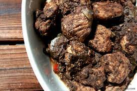

Ingredients:
- 500g tuna fish, cut into chunks
- 1 cup thick tamarind juice
- 1/2 cup coconut oil
- 1 large onion, finely sliced
- 2 sprigs curry leaves
- 2-3 green chilies, sliced
- 1 tablespoon crushed black pepper
- 1 tablespoon chili powder (adjust to taste)
- 1 teaspoon turmeric powder
- 1 teaspoon mustard seeds
- 1 teaspoon fenugreek seeds
- 3-4 cloves garlic, minced
- 1-inch piece of ginger, minced
- Salt to taste
Instructions:
- Clean Tuna: Rinse the tuna fish chunks thoroughly and set aside.
- Prepare Tamarind Juice: Soak tamarind in warm water and extract 1 cup of thick tamarind juice.
- Heat Coconut Oil: In a large pan, heat coconut oil over medium heat.
- Sauté Aromatics: Add mustard seeds and fenugreek seeds. When they start to splutter, add sliced onions, curry leaves, green chilies, minced garlic, and minced ginger. Sauté until the onions are golden brown.
- Add Spices: Add crushed black pepper, chili powder, turmeric powder, and salt. Mix well.
- Add Tuna: Add the tuna fish chunks to the pan and coat them with the spice mixture.
- Pour Tamarind Juice: Pour the thick tamarind juice into the pan. Stir well to combine.
- Simmer: Reduce the heat to low, cover the pan, and let it simmer for about 20-30 minutes or until the fish is cooked and the curry thickens.
- Check Seasoning: Taste the curry and adjust salt and spice levels according to your preference.
- Serve: Once the fish is tender and the curry has reached the desired consistency, remove from heat. Serve hot with rice.
- Enjoy your flavorful Malu Ambulthiyal!